Chương 3:
Chăm sóc sức khoẻ và môi trường sống
Mục lục:
-
Giới thiệu: Lời nói đầu và hướng dẫn sử dụng sổ tay


-
Chương 1: Cơ sở y tế và các chính sách bảo hiểm
- Câu 1. Tôi là người lao động của một công ty, hiện đang gặp vấn đề sức khoẻ và muốn đi khám bệnh. Tôi có thể khám, chữa bệnh ở đâu?
- Câu 2. Trước khi đi khám, nếu có thắc mắc, tôi có thể hỏi thông tin từ ai?
- Câu 3. Khi đi khám, tôi cần mang theo giấy tờ gì?
- Câu 4. Nếu tôi được chẩn đoán mắc bệnh mà cần phải nằm viện điều trị, tôi sẽ phải làm gì?
- Câu 5. Nếu bệnh tình của tôi không tiến triển, tôi có thể chuyển sang điều trị tại một bệnh viện hoặc cơ sở y tế khác không?
- Câu 6. Tôi cần làm gì để được chuyển viện?
- Câu 7. Làm thế nào để mua thuốc? Tôi có thể mua thuốc trực tiếp tại nhà thuốc, trên website hoặc ứng dụng di động mà không cần đơn thuốc của bác sĩ được không?
- Câu 8. Tôi thấy trên các trang mạng xã hội như Facebook và YouTube có nhiều quảng cáo về các phương pháp chữa bệnh, gồm cả thuốc tây y và đông y. Tôi có nên tin tưởng và liên hệ với những nguồn thông tin này không?
- Câu 9. Tôi từ nơi khác tới làm việc và có ký hợp đồng lao động với công ty. Vậy sau bao lâu làm việc tại công ty thì tôi được đóng BHXH bắt buộc?
- Câu 10. Tôi có được đăng ký tham gia bảo hiểm xã hội bắt buộc và bảo hiểm thất nghiệp không? Nếu được thì ai sẽ đăng ký cho tôi và số tiền tôi phải đóng hàng tháng được tính như thế nào?
- Câu 11. Tôi có thể kiểm tra bằng cách nào để biết mình đã được công ty đăng ký tham gia BHXH bắt buộc và bảo hiểm thất nghiệp hay chưa, cũng như việc đóng bảo hiểm đã đúng và đủ hay không?
- Câu 12. Công ty đã đăng ký cho tôi tham gia BHXH bắt buộc. Vậy tôi có thể hưởng các chế độ, trợ cấp như thế nào và các chế độ đó bao gồm những gì?
- Câu 13. Trong trường hợp người lao động gặp tai nạn giao thông nghiêm trọng, họ có được bảo hiểm xã hội bắt buộc chi trả không?
- Câu 14. Tôi là người lao động đã làm việc và tham gia đóng BHXH bắt buộc tại công ty được 15 năm. Do vấn đề sức khỏe, tôi không thể tiếp tục làm việc. Vậy tôi có thể nghỉ việc không? Nếu nghỉ việc, tôi có được hưởng chế độ bảo hiểm tương ứng với thời gian đã đóng trong 15 năm qua không?
- Câu 15. Nếu tôi bị bệnh ung thư vú, tôi được hưởng quyền lợi gì từ các loại bảo hiểm bắt buộc?
- Câu 16. Tôi đã ký hợp đồng lao động không xác định thời hạn với công ty, vậy tôi có được đóng bảo hiểm y tế bắt buộc không? Ai là người đóng, tôi hay công ty?
- Câu 17. Nếu tôi bị ốm và muốn đi khám bệnh, tôi cần làm gì để có thể sử dụng thẻ bảo hiểm y tế tại các cơ sở y tế? Những dịch vụ y tế nào sẽ được bảo hiểm y tế chi trả?
- Câu 18. (Chị Ngọc, 29 tuổi): Tôi đã đi khám bệnh bác sĩ chẩn đoán bị viêm phổi và chỉ định tôi vào viện điều trị nội trú (theo bác sĩ nói tôi sẽ nằm viện 5-7 ngày). Tôi muốn biết những dịch vụ y tế nào khi điều trị nội trú được bảo hiểm y tế chi trả?
- Câu 19. Nếu có thắc mắc hay cần giải thích về bảo hiểm y tế thì tôi nên liên hệ với ai?
- Câu 20. (Anh Thọ, 35 tuổi): Hiện tại tôi đang điều trị nội trú cho chứng đau lưng ở bệnh viện, nhưng tình trạng bệnh không thuyên giảm và được bác sĩ chỉ định chuyển đến một bệnh viện khác. Trong trường hợp này bảo hiểm y tế có tiếp tục chi trả chi phí chữa bệnh sau khi tôi chuyển đến bệnh viện khác không?
- Câu 21. Tôi là lao động nữ đang làm việc cho một công ty, đã tham gia BHXH bắt buộc và bảo hiểm y tế, hiện đang mang thai. Nếu sinh con ở bệnh viện công lập, tôi sẽ được bảo hiểm chi trả như thế nào?
- Câu 22. Mức hưởng bảo hiểm sinh con tại bệnh viện trái tuyến và bệnh viện tư có khác nhau không?
- Câu 23. Chị Ngọc (29 tuổi, công nhân may tại Bắc Ninh, có hai con nhỏ). Chị Ngọc muốn biết quyền lợi của lao động nữ khi có con nhỏ.
-
Chương 2: An toàn lao động và sức khỏe nghề nghiệp
- Câu 24. Tôi có thể yêu cầu công ty luôn cung cấp đầy đủ găng tay bảo hộ lao động không?
- Câu 25. Tôi làm trong một công ty cơ khí, bị ô nhiễm tiếng ồn với cường độ cao. Tôi nên làm gì để bảo vệ được bản thân và những người lao động khác tránh được tiếng ồn?
- Câu 26. Tôi có thể được cung câp thông tin rõ ràng về qui định an toàn lao động (ATLĐ) và trách nhiệm của doanh nghiệp khi bắt đầu làm việc ở một công ty không?
- Câu 27. Khi làm việc theo hợp đồng lao động, tôi có được tham gia đào tạo hoặc huấn luyện về an toàn lao động không?
- Câu 28. Tôi đang làm việc theo hợp đồng lao động. Nếu trong quá trình làm việc xảy ra tai nạn bị thương nặng thì tôi nên làm gì? Tôi nên liên hệ với ai để được hỗ trợ?
- Câu 29. Nếu tôi bị tai nạn lao động tại nơi làm việc và phải nhập viện điều trị, tôi sẽ được hưởng những hỗ trợ gì? Chi phí điều trị sẽ do ai chi trả?
- Câu 30. Trong trường hợp tôi bị ốm đau hoặc tai nạn lao động, tôi có được nghỉ việc và hưởng chế độ có lương không?
- Câu 31. Nếu tôi bị chấn thương do tai nạn lao động và không thể tiếp tục làm công việc hiện tại, liệu công ty có sắp xếp cho tôi làm việc ở vị trí khác phù hợp hơn không?
- Câu 32. Nếu tôi bị chấn thương do tai nạn lao động và không thể tiếp tục làm công việc hiện tại, tôi có được bồi thường không? Thủ tục bồi thường như thế nào?
- Câu 33. Đồng nghiệp của tôi không may qua đời do tai nạn lao động tại công ty. Chủ công ty và BHXH có phải bồi thường cho anh ấy không?
- Câu 34. Thủ tục bồi thường sẽ được thực hiện như thế nào?
- Câu 35. Trong trường hợp phải điều trị tại bệnh viện, tôi sẽ được hưởng chế độ bảo hiểm như thế nào?
- Câu 36. Tôi có được khám sức khỏe định kỳ nếu làm việc theo hợp đồng bán thời gian hoặc thời vụ không?
- Câu 37. Khám sức khỏe định kỳ cho người lao động (cả nam giới và nữ giới) sẽ bao gồm thăm khám và xét nghiệm nào?
- Câu 38. Tôi làm công việc liên quan tới hóa chất và chất độc hại tại nhà máy. Tôi có được khám sức khỏe định kỳ thường xuyên hơn không? Ngoài ra, nếu mắc bệnh nghề nghiệp, tôi sẽ được hưởng những quyền lợi và hỗ trợ nào?
- Câu 39. Anh Thọ hỏi: Bạn anh là một người làm trong nhà máy sản xuất xi-măng 3 năm, bị bệnh bụi phổi. Như vậy có phải bệnh nghề nghiệp không?
- Câu 40. Nếu đúng là bệnh nghề nghiệp, thì bạn anh được hưởng những quyền lợi gì?
- Câu 41. Tôi là Mai, 23 tuổi, người lao động đến từ một tỉnh phía Bắc chưa kết hôn, làm trong công ty linh kiện điện tử của nước ngoài được hai năm. Quản lý trực tiếp tôi là người Việt Nam. Người quản lý này thường la mắng và đối xử bất công với tôi tại nơi làm việc do tôi không đồng ý một số yêu cầu khiếm nhã của ông ấy. Tôi nên làm gì trong trường hợp này?
- Câu 42. Tôi thường xuyên bị một đồng nghiệp nam cư xử rất khó chịu và hay nhận xét các bộ phận nhạy cảm của tôi và đồng nghiệp nữ tại nơi làm việc. Đây có phải là hành vi quấy rối tình dục không?
- Câu 43. Tôi và các bạn nữ bị anh ta cư xử như vậy, chúng tôi nên làm gì?
- Câu 44. Bạn tôi làm trong một nhà hàng của một công ty khá nổi tiếng. Cô ấy thường bị khách hàng quấy rối tình dục (có hành vi đụng chạm không phù hợp, rủ đi chơi, thậm chí gạ gẫm qua đêm) khiến cô ấy cảm thấy bị xúc phạm. Tôi nên khuyên bạn tôi làm gì?
- Câu 45. Bạn của chị Ngọc làm giúp việc cho một gia đình. Gần đây, ông chủ có hành vi cố tình chạm vào mông, kèm theo những lời nói đùa cợt, gạ gẫm đi chơi. Hành vi này của ông chủ có phải là bình thường không? Bạn của chị Ngọc rất lo lắng, chị ấy nên làm gì?
- Câu 46. Bạn gái của Mai cho biết cô ấy đã bị bạn trai ép quan hệ tình dục trong khi bạn ấy chưa sẵn sàng cho việc này, hiện bạn ấy rất lo lắng. Trong trường hợp này, có phải bạo lực tình dục không?
- Câu 47. Bạn của tôi cần phải làm gì trong trường hợp này?
-
Chương 3: Chăm sóc sức khoẻ và môi trường sống
- Câu 48. Anh Đạt hỏi: Tôi chưa kết hôn nhưng có nhu cầu quan hệ tình dục. Khi quan hệ, tôi cần làm gì để đảm bảo an toàn?
- Câu 49. Tại sao cần sử dụng bao cao su đúng cách? Sử dụng bao cao su đúng cách là như thế nào?
- Câu 50. Sau khi quan hệ tình dục với bạn gái, tôi thấy bị đau khi đi tiểu. Tôi gặp vấn đề gì?
- Câu 51. Tôi là Mai, chưa kết hôn. Tôi và bạn trai có quan hệ tình dục nhưng chưa muốn có thai. Ngoài việc dùng bao cao su, nam và nữ thanh niên có thể áp dụng biện pháp tránh thai nào khác?
- Câu 52. Nếu đi khám, tôi nên đến đâu?
- Câu 53. Nếu tôi được chẩn đoán là mắc một trong các bệnh lây truyền qua đường tình dục, tôi có thể tự điều trị được không? Nếu không chữa trị các bệnh lây truyền qua đường tình dục cẩn thận, tôi có thể bị hậu quả gì?
- Câu 54. Anh Đạt hỏi: Làm thế nào để tôi có thể bảo vệ bản thân khỏi các bệnh lây truyền qua đường tình dục?
- Câu 55. Anh Đạt hỏi: Bạn tôi làm cùng công ty và mới đi xét nghiệm máu được thông báo là đã nhiễm HIV (anh ấy lo sợ không dám nói với ai). Liệu bạn tôi có cần phải thông báo với người quản lý hoặc người sử dụng lao động) không?
- Câu 56. Tôi là Đạt. Tôi đã có người yêu ở quê và gần đây tôi có quan hệ tình dục với một cô gái (tôi có quen nhưng không biết nhiều về cô ấy). Tôi đang rất lo sợ bị mắc bệnh lây truyền qua đường tình dục do mối quan hệ này. Tôi có thể bị mắc bệnh gì khi tôi có quan hệ tình dục như vậy?
- Câu 57. Nếu không may bị mắc các bệnh đó, tôi có thể nhận biết qua các biểu hiện nào?
- Câu 58. Tôi có nên nói việc mình có những biểu hiện bất thường với cô gái mà tôi đã quan hệ không?
- Câu 59. Kinh nguyệt của tôi không được đều. Tôi nên làm gì?
- Câu 60. Tôi thấy nhiều đồng nghiệp nữ và bạn tôi nói là mỗi lần sinh hoạt tình dục xong lại uống thuốc tránh thai khẩn cấp. Liệu thuốc tránh thai khẩn cấp có nguy hiểm và gây hậu quả gì không?
- Câu 61. Tôi nên dùng thuốc tránh thai khẩn cấp trong trường hợp nào?
- Câu 62. Tôi 22 tuổi, đã có bạn trai và thỉnh thoảng chúng tôi có quan hệ tình dục. Gần đây tôi thấy hay buồn nôn và chóng mặt nên lo lắng có thể đã mang thai nhưng hiện tại tôi chưa muốn lập gia đình. Nếu tôi có thai và không muốn sinh con thì tôi nên làm thế nào?
- Câu 63. Nếu tôi có thai ngoài ý muốn và muốn chấm dứt thai kỳ thì tôi phải làm thế nào?
- Câu 64. Phá thai có nguy hiểm không?
- Câu 65. Có người nói nếu phá thai sau này tôi có thể bị vô sinh? Điều này có đúng không?
- Câu 66. Tôi là Mai, 23 tuổi, sắp kết hôn. Nhiều bạn khuyên tôi nên đi xét nghiệm viêm gan B và HIV trước hôn nhân. Việc này có thực sự cần thiết không? Tại sao bạn lại khuyên tôi như vậy?
- Câu 67. Tôi nên đi xét nghiệm ở đâu?
- Câu 68. Tôi đang mang thai và cảm thấy khoẻ mạnh, tôi có cần đi khám thai không?
- Câu 69. Tôi nên đi khám thai ở đâu?
- Câu 70. Tôi nên đi khám bao nhiêu lần trong kỳ mang thai? Và nên khám vào thời gian nào của thai kỳ?
- Câu 71. Tôi có phải tiêm hay uống thuốc gì trong thời kỳ mang thai không?
- Câu 72. Người lao động nên làm gì khi cảm thấy căng thẳng trong công việc?
- Câu 73. Tôi rất nhớ gia đình và bạn bè trong quãng thời gian phải sống xa quê. Tôi có thể làm gì để bớt nhớ nhà?
- Câu 74. Tôi đang mang thai con đầu lòng và nghe nhiều về trầm cảm đối với phụ nữ trong thời kỳ mang thai và sau sinh. Tôi nên làm gì?
- Câu 75. Tôi rất phân vân, có phải người có vấn đề về tâm thần là người điên không?
- Câu 76. Tôi vừa chuyển việc sang công ty mới. Gần đây, tôi cảm thấy buồn, dễ cáu giận và khó kiểm soát cảm xúc. Tôi nên làm gì để cải thiện tâm trạng và cảm thấy tốt hơn?
- Câu 77. Tôi là lao động nữ tại công ty dệt may. Gần đây, tôi cảm thấy mất hứng thú với các hoạt động mình từng yêu thích và đôi khi nghĩ đến tự tử. Tôi nên làm gì?
- Câu 78. Người lao động nên làm gì để bảo vệ giấc ngủ khi phải làm việc ca đêm?
- Câu 79. Thỉnh thoảng tôi bị chồng đánh khi anh ấy thua bạc và đòi tiền. Tôi cảm thấy suy nhược và mệt mỏi. Tôi nên làm gì?
- Câu 80. Tôi là nữ lao động 35 tuổi, tôi sống cùng chồng và hai con. Công việc của tôi ở công ty là làm theo ca: 1 tuần làm đêm và 2 tuần làm ngày và sau tuần làm đêm tôi được nghỉ 2 ngày. Trong lúc làm việc ở công ty, tôi phải đứng toàn bộ thời gian để kiểm tra sản phẩm trong chuỗi công việc. Tôi nên làm gì để bản thân không bị căng thẳng và giảm mệt mỏi về cuộc sống hiện tại?
- Câu 81. Tôi là người đồng tính và cảm thấy mình dễ bị phân biệt đối xử. Điều này có ảnh hưởng tới sức khỏe tâm thần của tôi không? Tôi có thể gặp phải các vấn đề sức khoẻ gì?
- Câu 82. Tôi nên làm gì và tìm đến đâu để được tư vấn?
- Câu 83. Chị Mai là công nhân trong một nhà máy điện tử tại khu công nghiệp (KCN) ở Hà Nội, nơi có mật độ công nhân cao và điều kiện sống khá khó khăn. Chị thuê nhà trọ ở chung với bạn trai. Môi trường sống của chị Mai trong khu vực này là sự kết hợp giữa môi trường công nghiệp và sống trong khu trọ không đảm bảo về không gian sống và điều kiện vệ sinh. Liệu tình trạng ô nhiễm tiếng ồn và không khí là những yếu tố có thể ảnh hưởng đến sức khỏe của chị Mai và bạn trai chị không? Chị Mai và bạn trai nên làm gì để cải thiện môi trường sống tốt hơn?
- Câu 84. Tôi mới chuyển đến thành phố mới sinh sống. Làm thế nào để tôi có thể tìm được nhà trọ phù hợp?
- Câu 85. Chị Ngọc (29 tuổi) và gia đình sống tại một khu công nghiệp ở Bắc Ninh, nơi có môi trường công nghiệp và ô nhiễm tiếng ồn. Chị Ngọc thường xuyên mất ngủ. Liệu sức khoẻ của chị Ngọc và gia đình có bị ảnh hưởng bởi tiếng ồn từ khu công nghiệp không?
- Câu 86. Anh Đạt (25 tuổi) sống trong một khu trọ tại thành phố Đồng Nai cùng với các bạn đồng nghiệp. Môi trường sống của anh có thể gặp phải các vấn đề như thiếu không gian sống riêng tư, chất lượng nhà trọ không đảm bảo về vệ sinh, và điều kiện sống bị ảnh hưởng bởi sự đông đúc, tắc nghẽn của khu vực công nghiệp. Anh Đạt nên làm gì?
- Câu 87. Nước sinh hoạt ở nhà trọ của tôi có vẻ không được tốt, nước có mùi và cặn bẩn. Điều này có ảnh hưởng đến sức khỏe của gia đình tôi tôi không? Tôi nên làm gì?
- Câu 88. Gần đây có một quán karaoke mới mở ngay cạnh nơi tôi ở. Tôi không thể ngủ được vì những tiếng ồn quá lớn từ quán karaoke. Điều này có hại cho sức khỏe của tôi không? Tôi nên làm gì?
- Câu 89. Khu trọ tôi ở rất chật chội, gần đây có nhiều người hàng xóm bị cúm A. Tôi nên làm gì để bảo vệ sức khỏe?
- Câu 90. Khu trọ tôi ở bị ngập úng do mưa lớn và luôn bị ảnh hưởng của mưa, bão khiến cuộc sống sinh hoạt thường ngày gặp rất nhiều khó khăn. Tôi phải làm gì để bảo vệ sức khỏe và đảm bảo an toàn?
- Câu 91. Khu trọ tôi thuê ở xa bệnh viện, hoàn cảnh gia đình tôi rất khó khăn. Nếu bị bệnh, tôi phải làm thế nào?
-
Chương 4: Phòng ngừa bệnh tật
- Câu 92. Làm sao tôi biết mình có thể đang mắc các bệnh truyền nhiễm? Những biểu hiện đặc trưng của loại bệnh này là gì?
- Câu 93. Tôi bị ho và sốt, có phải tôi bị nhiễm trùng hô hấp không? Tôi có cần sử dụng thuốc kháng sinh không?
- Câu 94. Nếu bị nhiễm trùng hô hấp, tôi nên đi khám ở đâu?
- Câu 95. Gia đình tôi có con bị sốt xuất huyết. Tôi nên làm gì?
- Câu 96. Tôi cần làm gì để phòng tránh bệnh sốt xuất huyết cho gia đình?
- Câu 97. Bệnh lao có biểu hiện như thế nào?
- Câu 98. Tôi có thể đi khám và làm xét nghiệm bệnh lao ở đâu?
- Câu 99. Nếu tôi được chẩn đoán là bị mắc bệnh lao, tôi có thể tự mua thuốc điều trị được không?
- Câu 100. Tôi vừa bị chó lạ cắn khi đang trên đường đi làm về. Tôi có nguy cơ bị mắc bệnh dại không? Tôi cần làm gì để xử lý và phòng ngừa tạm thời?
- Câu 101. Tôi bị chó cắn, có thể chữa chó dại cắn bằng thuốc đông y không? Tôi nghe nhiều người nói, tiêm vắc-xin phòng dại rất hại sức khỏe?
- Câu 102. Tôi và mấy người bạn đi nhậu (lòng lợn, tiết canh). Sau khi ăn xong về, ba trong sáu người chúng tôi bị đau bụng, tiêu chảy nặng. Có phải chúng tôi bị đau bụng đi ngoài là do ăn tiết canh không? Chúng tôi phải làm gì?
- Câu 103. Anh Thọ 35 tuổi đến từ tỉnh Ninh Bình và đã kết hôn, hỏi: Sau nhiều năm làm việc tại một công ty, tôi vừa bị mất việc nên tâm trạng bất ổn. Tôi thường rủ bạn bè đi uống rượu để giải khuây. Sau khi uống rượu tôi cảm thấy tốt hơn, thậm chí nếu một ngày không uống rượu, tâm trạng của tôi lại trở nên tồi tệ. Trong trường hợp này, tôi nên làm gì?
- Câu 104. Anh Đạt 25 tuổi hỏi: Trước đây tôi chưa từng hút thuốc lá. Sau khi vào làm việc cho một công ty tại thành phố Đồng Nai, các bạn đồng nghiệp của tôi đã hút thuốc và đưa cho tôi hút thử. Sau khi hút thuốc, tâm trạng của tôi bớt căng thẳng, từ đó tôi thường xuyên sử dụng thuốc lá và ngày một nhiều lên. Như vậy có hại đến sức khoẻ không?
- Câu 105. Tôi nên làm gì để giảm hút thuốc lá?
- Câu 106. Sau giờ làm, tôi thường đến các quán bar, câu lạc bộ để gặp gỡ bạn bè. Một số bạn bè của tôi đã dùng ma túy và nhiều lần rủ rê tôi thử. Từ chối mãi tôi cảm thấy ngại, thậm chí tôi còn bị bạn bè nói là "khác người" và có nguy cơ bị tẩy chay. Tôi nên làm gì?
- Câu 107. Tôi đã có bạn gái ở quê, nhưng gần đây đã phát sinh quan hệ tình dục với gái mại dâm. Sau đó, tôi cảm thấy rất lo lắng. Tôi nên làm gì?
- Câu 108. Gần đây, đồng nghiệp của tôi kiếm được khá nhiều tiền từ việc đánh bạc qua các ứng dụng trên điện thoại. Điều này khiến tôi nảy sinh suy nghĩ muốn thử để “đổi đời”. Tôi có nên chơi thử không?
-
Thông tin bổ sung: Đường dây nóng và cơ sở y tế
3.1. Sức khoẻ tình dục và sức khoẻ sinh sản
Anh Đạt hỏi: Tôi chưa kết hôn nhưng có nhu cầu quan hệ tình dục. Khi quan hệ, tôi cần làm gì để đảm bảo an toàn?
- Tình dục an toàn là quan hệ tình dục không mang thai ngoài ý muốn và không bị các bệnh lây truyền qua đường tình dục, bao gồm cả HIV.
- Biện pháp tốt nhất để đảm bảo tình dục an toàn cho thanh niên chưa kết hôn là sử dụng bao cao su (nam/nữ) thanh niên cần tìm hiểu kỹ về các biện pháp tránh thai và cách sử dụng bao cao su đúng cách.
- Ngoài tình dục an toàn, nam/nữ thanh niên khi quan hệ tình dục cần có sự tự nguyện, tôn trọng lẫn nhau, không làm tổn thương tình thần và thể chất từ cả hai phía. Như vậy mới đảm bảo tình dục an toàn, lành mạnh và có văn hoá.
Tại sao cần sử dụng bao cao su đúng cách? Sử dụng bao cao su đúng cách là như thế nào?
- Nếu bạn không sử dụng bao cao su (BCS) đúng cách, sẽ không đạt được độ an toàn tuyệt đối (vẫn có thể có thai ngoài ý muốn và lây bệnh qua đường tình dục).
- Sử dụng BCS đúng cách là dùng BCS chất lượng tốt (không thủng, rách, còn hạn sử dụng, không bị cắt hay chọc thủng), dùng ngay khi bắt đầu giao hợp (dùng sai là không dùng BCS từ khi bắt đầu quan hệ tình dục, mà chỉ dùng sau khi đã giao hợp và đeo BCS khi sắp phóng tinh).
LƯU Ý: Ngoài vỏ bao cao su luôn có hướng dẫn cách sử dụng BCS đúng cách. Bạn nên đọc kỹ và học cách sử dụng đúng trước khi dùng.
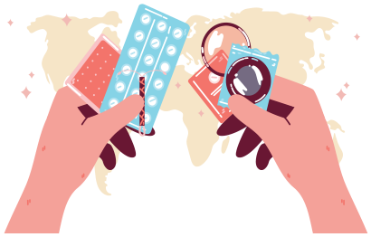
Sau khi quan hệ tình dục với bạn gái, tôi thấy bị đau khi đi tiểu. Tôi gặp vấn đề gì?
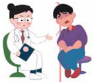
- Bạn đã có thể bị viêm đường sinh dục hoặc bị bệnh lây truyền qua đường tình dục.
- Nếu thấy có các dấu hiệu này bạn nên đi khám ngay.
- Các dấu hiệu của bệnh lây truyền qua đường tình dục bạn tham khảo trong bảng 3.1
Tôi là Mai, chưa kết hôn. Tôi và bạn trai có quan hệ tình dục nhưng chưa muốn có thai. Ngoài việc dùng bao cao su, nam và nữ thanh niên có thể áp dụng biện pháp tránh thai nào khác?
- Có nhiều phương pháp tránh thai để các bạn cân nhắc sử dụng khi chưa kết hôn. Các biện pháp tránh thai hiện đại (ngoài Bao cao su) có thể là: thuốc viên tránh thai cho nữ, tiêm thuốc tránh thai, que cấy tránh thai, đặt vòng tránh thai, màng ngăn âm đạo. Bạn có thể dùng thuốc tránh thai hàng ngày, nhưng cần chọn loại phù hợp và sử dụng đúng cách.
- Khi chưa kết hôn các bạn nữ không nên chọn các phương pháp dài hạn như đặt vòng, tiêm thuốc hay cấy que tránh thai.
- Các phương pháp tránh thai vĩnh viễn như triệt sản tuyệt đối không nên áp dụng khi chưa kết hôn đối với cả nam và nữ.
- Bạn có thể sử dụng các phương pháp tránh thai tự nhiên như theo dõi chu kỳ kinh nguyệt để xác định ngày an toàn (nếu kinh nguyệt đều), hoặc xuất tinh ngoài âm đạo.
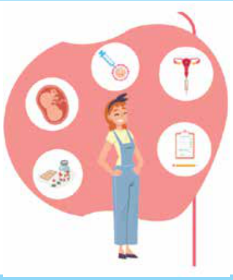
LƯU Ý: Khi chưa kết hôn mà có quan hệ tình dục, biện pháp tránh thai tốt nhất là sử dụng bao cao su, vừa có tác dụng tránh thai và vừa tránh lây truyền các bệnh qua đường tình dục.
Nếu đi khám, tôi nên đến đâu?
- Nếu có một trong các biểu hiện như trên sau khi có quan hệ tình dục, bạn cần đến ngay các cơ sở y tế để khám và xác định chắc chắn bạn có bị một hay nhiều bệnh lây truyền qua đường tình dục (LTQĐTD).
- Bạn cần chọn các cơ sở y tế có chuyên môn phù hợp và có uy tín.
- Bạn có thể đến khám tại các cơ sở y tế: Bệnh viện da liễu các tuyến, Khoa Bệnh da liễu của các bệnh viện Đa khoa, các phòng khám tư nhân có chuyên môn phù hợp và có uy tín.
Nếu tôi được chẩn đoán là mắc một trong các bệnh lây truyền qua đường tình dục, tôi có thể tự điều trị được không? Nếu không chữa trị các bệnh lây truyền qua đường tình dục cẩn thận, tôi có thể bị hậu quả gì?
- Bạn không nên tự điều trị, mà nên tuân theo chỉ định điều trị của bác sĩ. Tự điều trị có thể dẫn đến nhiều hậu quả không tốt.
- Nếu không chữa trị, các bệnh lây truyền qua đường tình dục có thể bị biến chứng nặng dẫn đến nhiễm trùng máu, tâm thần (hậu quả của bệnh giang mai), và về lâu dài có thể dẫn đến vô sinh.
Anh Đạt hỏi: Làm thế nào để tôi có thể bảo vệ bản thân khỏi các bệnh lây truyền qua đường tình dục?
Biện pháp bảo vệ bản thân khỏi các bệnh lây truyền qua đường tình dục:
- Không quan hệ tình dục với người không quen biết hoặc mới quen mà chưa rõ về họ.
- Nếu có quan hệ tình dục bạn cần luôn dùng bao cao su đúng cách.
- Quan hệ chung thuỷ một bạn tình (chỉ với người yêu hoặc vợ/chồng mình).
Anh Đạt hỏi: Bạn tôi làm cùng công ty và mới đi xét nghiệm máu được thông báo là đã nhiễm HIV (anh ấy lo sợ không dám nói với ai). Liệu bạn tôi có cần phải thông báo với người quản lý hoặc người sử dụng lao động) không?
Anh ấy không bắt buộc phải thông báo tình trạng nhiễm HIV cho quản lý của công ty. Tuy nhiên, bạn của anh có thể cân nhắc một số vấn đề sau:
- Sức khỏe và điều trị: Điều quan trọng nhất là bạn của anh cần tham gia điều trị kháng HIV bằng thuốc ARV càng sớm càng tốt, tập trung vào việc điều trị và quản lý sức khỏe của mình. Việc tuân thủ điều trị ARV đều đặn sẽ giúp duy trì sức khỏe tốt, kéo dài tuổi thọ và giảm đến 97% nguy cơ lây truyền HIV sang người khác qua quan hệ tình dục.
- Hỗ trợ tâm lý: Việc đối mặt với chẩn đoán nhiễm HIV có thể rất khó khăn về mặt tâm lý. Bạn của anh nên tìm kiếm sự hỗ trợ từ các chuyên gia y tế, tổ chức cộng đồng về HIV/AIDS hoặc những người thân đáng tin cậy.
- Nếu bạn của anh lo lắng về việc bị phân biệt đối xử hoặc có bất kỳ thắc mắc nào khác về quyền lợi của mình, anh ấy có thể tìm đến sự tư vấn từ các tổ chức cộng đồng tham gia hoạt động phòng, chống HIV/AIDS, tổ chức trợ giúp pháp lý hoặc các cơ quan đầu mối phòng, chống HIV/AIDS tại địa phương trực thuộc Trung tâm kiểm soát bệnh tật tỉnh, thành phố để được tư vấn và hỗ trợ.
Tôi là Đạt. Tôi đã có người yêu ở quê và gần đây tôi có quan hệ tình dục với một cô gái (tôi có quen nhưng không biết nhiều về cô ấy). Tôi đang rất lo sợ bị mắc bệnh lây truyền qua đường tình dục do mối quan hệ này. Tôi có thể bị mắc bệnh gì khi tôi có quan hệ tình dục như vậy?
Bạn có nguy cơ bị mắc các bệnh lây truyền qua đường tình dục, các bệnh đó có thể là: Lậu, giang mai, giận mu, bệnh sùi mào gà, mụn rộp sinh dục… và nguy hiểm nhất là nhiễm HIV.
Nếu không may bị mắc các bệnh đó, tôi có thể nhận biết qua các biểu hiện nào?
Bạn xem bảng 3.1, tuỳ theo bạn là nam hay nữ để đối chiếu các triệu chứng, nếu có một trong các triệu chứng giống với các triệu chứng mô tả ở bảng dưới đây, bạn cần đến các cơ sở y tế để khám và điều trị.
Bảng 3.1 Các dấu hiệu thường thấy khi bị mắc các bệnh lây truyền qua đường tình dục
Điều quan trọng là bạn cần nhận biết được các dấu hiệu của bệnh lây truyền qua đường tình dục. Các dấu hiệu thường thấy khi bị mắc các bệnh lây truyền qua đường tình dục đối với mỗi giới thường có các dấu hiệu điển hình sau:
- Đối với nữ:
- Ra khí hư (dịch tiết âm đạo) bất thường: có mùi hôi, tanh, màu đỏ máu, màu xanh hoặc mủ.
- Đi tiểu bị đau buốt, rát hoặc đi tiểu nhiều lần.
- Vùng sinh dục đỏ, sưng, xuất hiện các nốt lạ, gây đau.
- Đau bụng dưới hoặc đau bụng khi đang quan hệ tình dục.
- Đôi khi có sốt, ớn lạnh.
- Đối với nam:
- Đi tiểu buốt hoặc đi nhiều lần hơn bình thường.
- Chảy dịch bất thường (mủ) từ dương vật.
- Sưng tấy, xuất hiện các nốt lạ hoặc vết loét bộ phận sinh dục.
- Có thể có triệu chứng sốt.
- Riêng đối với lây truyền HIV, có thể không có bất kỳ dấu hiệu trên, mà chỉ biết được thông qua xét nghiệm máu.
Tôi có nên nói việc mình có những biểu hiện bất thường với cô gái mà tôi đã quan hệ không?
Bạn nên nói với cô gái đó và khuyên cô ấy đi khám (cô ấy có thể chưa biết chính bản thân đã bị mắc các bệnh lây truyền qua đường tình dục).
Kinh nguyệt của tôi không được đều. Tôi nên làm gì?
- Kinh nguyệt của bạn không đều có thể do nhiều nguyên nhân, như chế độ làm vệc nghỉ ngơi không điều độ, do rối loạn nội tiết hoặc ảnh hưởng của thuốc điều trị bệnh khác. Ngoài ra, cũng có nhiều phụ nữ kinh nguyệt không đều nhưng không xác định được rõ nguyên nhân.
- Bạn nên đi khám bác sĩ để tìm hiểu về tình trạng của mình.
- Kinh nguyệt không đều không quá nguy hiểm, có thể sẽ đều sau một thời gian nhất định.
- Kinh nguyệt đang rất đều mà thay đổi sang không đều và thất thường thì bạn nên đi khám. Bạn không nên tự điều trị mà không có hướng dẫn của người có chuyên môn (bác sĩ, dược sĩ,…).
Tôi thấy nhiều đồng nghiệp nữ và bạn tôi nói là mỗi lần sinh hoạt tình dục xong lại uống thuốc tránh thai khẩn cấp. Liệu thuốc tránh thai khẩn cấp có nguy hiểm và gây hậu quả gì không?
Việc sử dụng thuốc tránh thai khẩn cấp thường xuyên là không tốt và có thể gây hậu quả lâu dài đến sức khỏe sinh sản. Lạm dụng thuốc có thể làm rối loạn nội tiết và nguy cơ dẫn đến hậu quả nguy hiểm đó là vô sinh ở nữ giới.
LƯU Ý:
- Trong hướng dẫn sử dụng của thuốc tránh thai khẩn cấp luôn ghi rõ giới hạn số lượng thuốc được dùng trong một khoảng thời gian nhất định. Ví dụ: Chỉ được dùng 1 lần (1 hoặc 2 viên) trong vòng 1 tháng).
- Bên cạnh đó, sử dụng thuốc tránh thai khẩn cấp không thể phòng các bệnh lây truyền qua đường tình dục và nhiễm HIV.
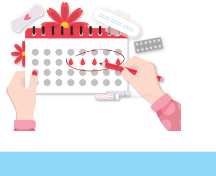
Tôi nên dùng thuốc tránh thai khẩn cấp trong trường hợp nào?
- Thuốc tránh thai khẩn cấp chỉ được sử dụng trong trường hợp khẩn cấp: Rách bao cao su, quan hệ tình dục không mong muốn, bị xâm hại,…
- Nếu bạn quan hệ tình dục với bạn trai mà chưa chuẩn bị bao cao su, bạn có thể dùng thuốc tránh thai khẩn cấp. Tuy nhiên, phải sử dụng đúng theo hướng dẫn, không được dùng nhiều hơn số lần được phép dùng theo hướng dẫn sử dụng.
Tôi 22 tuổi, đã có bạn trai và thỉnh thoảng chúng tôi có quan hệ tình dục. Gần đây tôi thấy hay buồn nôn và chóng mặt nên lo lắng có thể đã mang thai nhưng hiện tại tôi chưa muốn lập gia đình. Nếu tôi có thai và không muốn sinh con thì tôi nên làm thế nào?
- Bạn nên mua que thử thai ở các hiệu thuốc và thử thai theo hướng dẫn.
- Que thử lên 1 vạch đỏ là bạn không có thai, que thử lên 2 vạch rõ là bạn đã có thai.
- Nếu bạn không muốn sinh con, bạn nên xem xét nguyên nhân không muốn sinh con và cân nhắc kỹ lưỡng.
- Việc không muốn sinh con có thể do chính bản thân bạn và gia đình bạn không muốn, hoặc do bạn trai và gia đình bạn trai không muốn sinh ra đứa trẻ này.
- Bước đầu tiên bạn nên bàn bạc với bạn trai để ra quyết định cuối cùng là nên giữ thai và sinh con hay phá thai. Nếu có thể, nên giữ thai để sinh con.
- Bạn cần cho gia đình (đặc biệt là mẹ) biết về việc mình có thai để nhận được sự hỗ trợ và lời khuyên phù hợp.
- Để quyết định phá thai, bạn cần tìm hiểu kỹ lưỡng thông tin liên quan, vì phá thai có những hậu quả không tốt trước mắt và lâu dài.
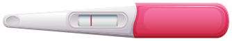
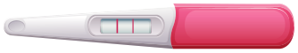
không có thai
có thai
Nếu tôi có thai ngoài ý muốn và muốn chấm dứt thai kỳ thì tôi phải làm thế nào?
- Nếu bạn muốn quyết định chấm dứt thai kỳ, cần chọn phương pháp phá thai an toàn để tránh hậu quả không mong muốn. Bạn nên đến cơ sở y tế được cấp phép và được bác sĩ có trình độ chuyên môn thực hiện.
- Bạn cần xác định tuổi thai để xem có thể chấm dứt thai kỳ hay không. Theo qui định, việc phá thai khi tuổi thai dưới 22 tuần (tính từ ngày đầu của kỳ kinh cuối cùng).
- Nên chấm dứt thai kỳ sớm (7-12 tuần tuổi) tại cơ sở y tế có uy tín, chất lượng tốt và thực hiện theo đúng hướng dẫn của bác sĩ.
- Khi thai to (trên 12 tuần và dưới 22 tuần), bạn cần đến cơ sở y tế tuyến tỉnh trở lên để được xử lý an toàn.
- Chăm sóc tốt sau phá thai: nghỉ ngơi, uống kháng sinh và một số loại thuốc khác theo đơn của bác sĩ, ăn uống đủ chất dinh dưỡng, kiêng quan hệ tình dục trong một tháng sau khi phá thai. Bạn cũng cần tuân thủ lịch khám lại theo chỉ định của bác sĩ.
- Tuyệt đối không phá thai tại các cơ sở y tế không đủ uy tín, không đảm bảo chất lượng và không có đầy đủ phương tiện cấp cứu trong trường hợp có biến chứng nặng xảy ra.
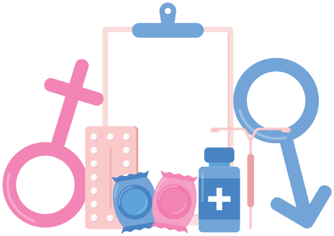
Bạn sẽ không được phá thai an toàn (nguy hiểm đến tính mạng) khi:
- Đến các cơ sở phá thai không được phép thực hiện phá thai/không có giấy phép hành nghề (phòng khám tư nhân).
- Đến các thầy lang vườn dùng các loại thuốc nam và thuốc bắc không được phép dùng.
- Mua thuốc tự phá thai tại nhà, ăn/uống các đồ để nhằm sảy thai.
- Tác động vật lý mạnh vào bụng, chạy nhảy, tự gây ngã… để sảy thai.
- Thai quá to (trên 22 tuần tuổi thai).
Phá thai có nguy hiểm không?
- Phá thai không nguy hiểm nếu được thực hiện an toàn, đó là:
- Phá thai tại cơ sở y tế uy tín, được phép phá thai,
- Không bị xảy ra các biến chứng trong và ngay sau phá thai (thủng tử cung, chảy máu, nhiễm trùng) và không để lại hậu quả lâu dài (vô sinh do tắc vòi trứng…)
- Phá thai không an toàn rất nguy hiểm, gây ra các biến chứng và để lại các hậu quả lâu dài, thậm chí ảnh hưởng đến tính mạng.
Có người nói nếu phá thai sau này tôi có thể bị vô sinh? Điều này có đúng không?
Điều này có thể đúng nếu quá trình phá thai không an toàn gây nhiễm trùng tử cung, vòi trứng và phần phụ, dẫn đến hậu quả lâu dài là vô sinh thứ phát (là vô sinh sau khi đã từng có thai).
Tôi là Mai, 23 tuổi, sắp kết hôn. Nhiều bạn khuyên tôi nên đi xét nghiệm viêm gan B và HIV trước hôn nhân. Việc này có thực sự cần thiết không? Tại sao bạn lại khuyên tôi như vậy?
- Việc này rất tốt nếu bạn làm được. Bạn nên đăng ký khám sức khỏe tiền hôn nhân, trong đó đã có 2 xét nghiệm này (hoặc bạn có thể yêu cầu tuỳ vào gói khám).
- Lời khuyên này rất hữu ích, vì nếu bạn biết tình trạng nhiễm HIV và viêm gan B của bản thân bạn, bạn có thể chủ động phòng ngừa lây truyền hai bệnh này cho con.
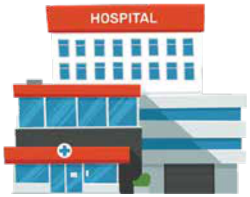
Tôi nên đi xét nghiệm ở đâu?
- Bạn có thể xét nghiệm ở các bệnh viện/cơ sở y tế có khoa/phòng xét nhiệm từ tuyến tỉnh trở lên.
- Bạn cũng có thể đến các phòng khám đa khoa, sản khoa hoặc khoa truyền nhiễm yêu cầu xét nhiệm máu để xác định nhiễm HIV và viêm gan B. Việc này khá đơn giản và bạn không cần cảm thấy e ngại.
- Bạn cũng có thể đến một số trung tâm được khuyến cáo của chuyên viên tư vấn và xét nghiệm cho người nghi ngờ hoặc nhiễm HIV.
Tôi đang mang thai và cảm thấy khoẻ mạnh, tôi có cần đi khám thai không?
- Bạn nên đi khám thai ngay sau khi biết mình đã mang thai, hoặc muộn nhất trong 3 tháng đầu.
- Bạn nên làm việc điều độ, nghỉ ngơi và bổ sung các thuốc bổ theo hướng dẫn của nhân viên y tế khi đến khám thai.
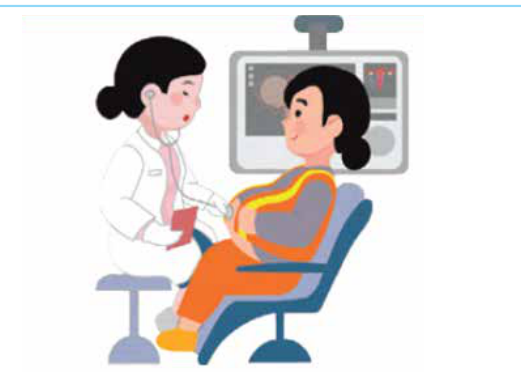
Tôi nên đi khám thai ở đâu?
- Bạn có thể đi khám thai ở các cơ sở y tế từ tuyến cơ sở (trạm y tế) cho đến tuyến cao nhất. Bạn cũng có thể khám tại các phòng khám tư nhân có uy tín.
- Bạn nên hỏi kinh nghiệm các bạn bè, đồng nghiệp, người thân đã từng có thai gần đây.
Tôi nên đi khám bao nhiêu lần trong kỳ mang thai? Và nên khám vào thời gian nào của thai kỳ?
- Theo khuyến cáo, bạn nên đi khám thai ít nhất 4 lần trong suốt thai kỳ.
- Có 4 mốc khám thai quan trọng bạn cần ghi nhớ để theo dõi sức khỏe thai kỳ và phát hiện sớm các vấn đề tiềm ẩn: (1) Khám thai lần đầu khi phát hiện mang thai, (2) tuần 11-13, (3) tuần 20-24, và (4) tuần 30-32.
- Có một số khuyến cáo cho rằng thai phụ nên khám thai nhiều lần hơn, 7-10 lần trong thai kỳ. Tuy nhiên khi bạn đến khám thai, các bác sĩ sẽ hẹn khám cho lần tiếp theo tuỳ theo tình trạng sức khoẻ của bạn và thai nhi.
Các mốc khám thai chi tiết:
1. Khám thai lần đầu:
- Ngay sau khi thử que 2 vạch hoặc chậm kinh, bạn nên đi khám để xác nhận có thai, xác định vị trí thai và kiểm tra sức khỏe tổng quát.
2. Tuần 11-13:
- Đây là giai đoạn quan trọng để thực hiện siêu âm đo độ mờ da gáy, tầm soát các dị tật bẩm sinh, cũng như các xét nghiệm sàng lọc trước sinh.
3. Tuần 20-24:
- Siêu âm hình thái học ở giai đoạn này giúp bác sĩ đánh giá chi tiết sự phát triển của các cơ quan trong cơ thể thai nhi, bao gồm tim, phổi, não, và các chi.
4. Tuần 30-32:
- Giúp theo dõi sự phát triển của thai nhi, đánh giá tình trạng sức khỏe của mẹ và bé, chuẩn bị cho quá trình sinh nở. Ngoài ra, bác sĩ có thể phát hiện các dị tật xuất hiện muộn. Tuỳ theo tình trạng thai nhi và tình hình sức khoẻ của mẹ, bác sĩ sẽ hẹn khám cho lần tiếp theo và tư vấn các bước chuẩn bị trước khi sinh.
Tôi có phải tiêm hay uống thuốc gì trong thời kỳ mang thai không?
- Bạn sẽ phải tiêm phòng uốn ván nếu trước đó bạn chưa tiêm. Nếu không có gì bất thường, bạn không phải tiêm thuốc điều trị.
- Bạn cần uống các thuốc bổ sung trong thời kỳ mang thai (theo chỉ định của bác sĩ). Nên hỏi bác sĩ nếu bạn muốn sử dụng bất kỳ loại thuốc nào.
3.2. Sức khoẻ tinh thần
Thông tin cơ bản về sức khoẻ tâm thần/tinh thần: Sức khỏe tâm thần: Là trạng thái cân bằng về tâm lý, cảm xúc và hành vi, giúp một người đối phó với căng thẳng trong cuộc sống và làm việc hiệu quả.
Biểu hiện của sức khỏe tâm thần tốt bao gồm:
- Cảm giác thoải mái với bản thân
- Khả năng kiểm soát cảm xúc và đối phó với áp lực
- Duy trì các mối quan hệ lành mạnh và hòa nhập xã hội
- Sức khỏe tinh thần: Là trạng thái hài hòa trong niềm tin, giá trị, mục đích sống và cảm giác bình an nội tâm. Khái niệm này thường liên quan đến việc tìm kiếm ý nghĩa trong cuộc sống và có thể gắn với tín ngưỡng, triết lý sống, hoặc các yếu tố tâm linh khác.
Đặc điểm của sức khỏe tinh thần:
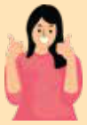
- Cảm giác hạnh phúc và bình an với bản thân và thế giới xung quanh.
- Khả năng đối diện với khó khăn bằng niềm tin hoặc giá trị sâu sắc.
- Nhận thức được ý nghĩa cuộc sống và cảm giác hướng thiện.
Các biểu hiện của rối loạn tâm thần thường gặp bao gồm:
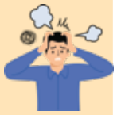
- Biểu hiện của lo âu bao gồm: Căng thẳng, hồi hộp, tim đập nhanh, khó thở, mất tập trung. Rối loạn lo âu xuất hiện khi cảm giác lo lắng kéo dài và không phù hợp với tình huống thực tế.
- Biểu hiện của trầm cảm: Buồn bã, mệt mỏi, mất ngủ hoặc ngủ quá nhiều, cảm giác vô vọng, chán ăn hoặc ăn quá nhiều, và suy nghĩ tiêu cực về bản thân hoặc có ý định tử tử…Trầm cảm có thể ảnh hưởng nghiêm trọng đến sức khỏe thể chất và tinh thần nếu không được can thiệp kịp thời.
- Biểu hiện của Stress (Căng thẳng): Căng thẳng thần kinh, đau đầu, mất ngủ, dễ cáu gắt và khó tập trung. Stress có thể được kích hoạt bởi nhiều yếu tố như công việc vất vả, quá tải công việc, học tập vất vả hoặc các tình huống xung đột trong cuộc sống.
Người lao động nên làm gì khi cảm thấy căng thẳng trong công việc?
- Khi cảm thấy căng thẳng trong công việc, người lao động nên giải lao vài phút để thư giãn, hít thở sâu hoặc vận động nhẹ.
- Có thể chia nhỏ công việc để giảm áp lực, sắp xếp các nhiệm vụ theo thứ tự ưu tiên rõ ràng.
- Trò chuyện với đồng nghiệp, quản lý hoặc chuyên gia tâm lý cũng giúp giải tỏa cảm xúc.
- Ngoài giờ làm, cần duy trì thói quen sinh hoạt lành mạnh như ngủ đủ giấc, ăn uống điều độ và tập thể dục đều đặn giúp cân bằng tâm trạng.
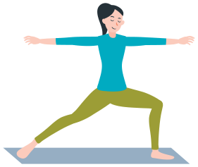
Tôi rất nhớ gia đình và bạn bè trong quãng thời gian phải sống xa quê. Tôi có thể làm gì để bớt nhớ nhà?
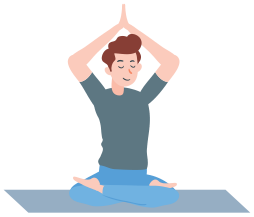
Cảm giác nhớ nhà là bình thường khi xa gia đình, đặc biệt với người đi làm xa nhà. Bạn có thể:
- Gọi điện và video call với người thân thường xuyên. Ví dụ: Thiết lập lịch gọi định kỳ vào cuối tuần để trò chuyện cùng gia đình.
- Tham gia hoạt động cộng đồng tại nơi ở mới như các câu lạc bộ hoặc hội nhóm văn hóa để kết bạn và tạo mối liên hệ mới.
- Lưu giữ các vật kỷ niệm như ảnh hoặc đồ dùng yêu thích từ quê nhà giúp gợi nhớ ký ức tích cực.
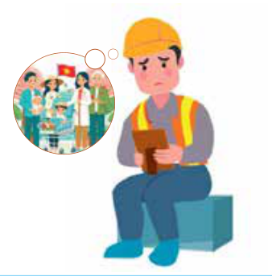
Tôi đang mang thai con đầu lòng và nghe nhiều về trầm cảm đối với phụ nữ trong thời kỳ mang thai và sau sinh. Tôi nên làm gì?
Trầm cảm trong và sau sinh là vấn đề thường gặp và có thể gây hậu quả không tốt có hại đến cả mẹ và con. Để tránh điều này xảy ra, bạn có thể:
- Tâm sự với người thân về cảm xúc của mình.
- Tham gia các hoạt động vui vẻ nhẹ nhàng, nghe nhạc…
- Tham gia lớp học tiền sản để được hướng dẫn và chia sẻ cùng các bà mẹ khác.
- Gặp bác sĩ tâm lý nếu cảm thấy lo âu kéo dài. Ví dụ: Nếu bạn khó ngủ hoặc hay khóc vô cớ, hãy sớm tìm sự hỗ trợ chuyên môn.
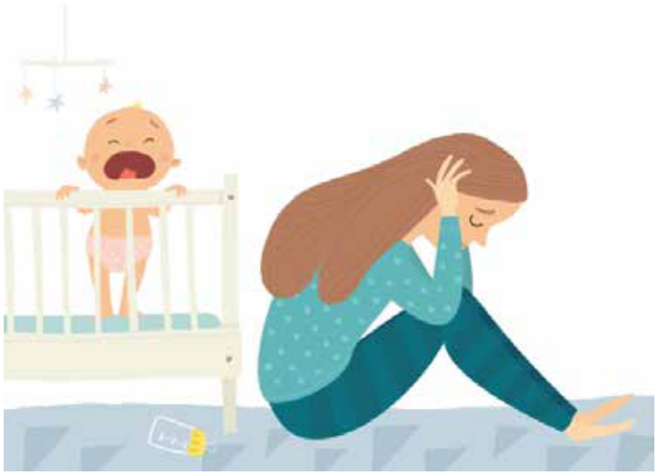
Tôi rất phân vân, có phải người có vấn đề về tâm thần là người điên không?
- Điều này không đúng, người có vấn đề về sức khỏe tâm thần không phải là “người điên”. Đây là một hiểu lầm phổ biến và mang tính kỳ thị.
- Sức khỏe tâm thần bao gồm nhiều trạng thái như lo âu, trầm cảm, stress… mà bất kỳ ai cũng có thể gặp phải và hoàn toàn có thể điều trị được. Chỉ một số rất ít trường hợp rối loạn nặng mới ảnh hưởng đến nhận thức và hành vi.
Tôi vừa chuyển việc sang công ty mới. Gần đây, tôi cảm thấy buồn, dễ cáu giận và khó kiểm soát cảm xúc. Tôi nên làm gì để cải thiện tâm trạng và cảm thấy tốt hơn?
Bạn nên:
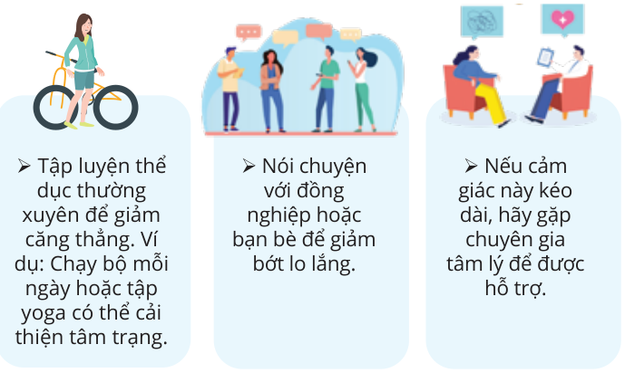
Tôi là lao động nữ tại công ty dệt may. Gần đây, tôi cảm thấy mất hứng thú với các hoạt động mình từng yêu thích và đôi khi nghĩ đến tự tử. Tôi nên làm gì?
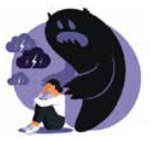
Đây là dấu hiệu nghiêm trọng, bạn có thể thử các cách sau đây:
- Tìm người tin cậy để chia sẻ ngay hoặc liên hệ với đường dây nóng hỗ trợ tâm lý.
- Tham gia các hoạt động thư giãn như thể thao hoặc nghệ thuật để tìm niềm vui mới.
- Nếu suy nghĩ tự tử trở nên thường xuyên, hãy gặp bác sĩ tâm thần hoặc nhà tâm lý học ngay lập tức để được hỗ trợ khẩn cấp.
Người lao động nên làm gì để bảo vệ giấc ngủ khi phải làm việc ca đêm?
- Khi làm việc ca đêm, người lao động nên duy trì lịch ngủ cố định sau mỗi ca làm, tạo môi trường ngủ yên tĩnh, tối và mát để dễ ngủ hơn.
- Tránh sử dụng thiết bị điện tử trước khi ngủ và hạn chế caffeine ít nhất 4–6 tiếng trước giờ ngủ.
- Có thể dùng kính chống ánh sáng xanh hoặc kính râm khi ra ngoài buổi sáng để giảm ức chế melatonin. Nếu có thể, nên chợp mắt ngắn (20–30 phút) trong ca làm để giảm mệt mỏi.
- Quan trọng nhất là duy trì lối sống lành mạnh, ăn uống đúng giờ và tập thể dục nhẹ thường xuyên.
Thỉnh thoảng tôi bị chồng đánh khi anh ấy thua bạc và đòi tiền. Tôi cảm thấy suy nhược và mệt mỏi. Tôi nên làm gì?
Đây là tình huống bạo lực gia đình và bạn cần tìm nơi an toàn:
- Liên hệ trung tâm bảo vệ phụ nữ hoặc đường dây nóng hỗ trợ bạo lực gia đình.
- Bạn tìm đến người phụ trách Hội Phụ nữ của công ty hoặc địa phương nơi bạn làm việc để được tư vấn và hỗ trợ.
- Nếu có thể, nhờ người thân giúp đỡ hoặc chuyển đến nơi tạm trú an toàn.
- Ở Việt Nam, bạn có thể gọi số 111 để được tư vấn về bạo lực gia đình.
Tôi là nữ lao động 35 tuổi, tôi sống cùng chồng và hai con. Công việc của tôi ở công ty là làm theo ca: 1 tuần làm đêm và 2 tuần làm ngày và sau tuần làm đêm tôi được nghỉ 2 ngày. Trong lúc làm việc ở công ty, tôi phải đứng toàn bộ thời gian để kiểm tra sản phẩm trong chuỗi công việc. Tôi nên làm gì để bản thân không bị căng thẳng và giảm mệt mỏi về cuộc sống hiện tại?
- Trong tuần làm đêm bạn cần sắp xếp thời gian ngủ ít nhất 6 tiếng sau ca làm việc.
- Được nghỉ 2 ngày sau tuần làm đêm bạn nên sắp xếp để tham gia các hoạt động cùng các con và chồng.
- Do công việc bạn phải đứng nhiều nên bạn tham khảo các bài tập luyện cho vùng lưng, cột sống, và nên ngồi nghỉ hoặc thể dục nhẹ nhàng sau mỗi 45 phút.
Tôi là người đồng tính và cảm thấy mình dễ bị phân biệt đối xử. Điều này có ảnh hưởng tới sức khỏe tâm thần của tôi không? Tôi có thể gặp phải các vấn đề sức khoẻ gì?
- Có, phân biệt đối xử có thể gây căng thẳng tâm lý và làm tăng nguy cơ trầm cảm.
- Người đồng tính và chuyển giới có nguy cơ cao mắc các rối loạn tâm thần (do nhiều nguyên nhân, trong đó có nguyên nhân chính là do bị kỳ thị từ mọi người). Hậu quả nghiêm trọng có thể dẫn đến ý nghĩ hoặc hành vi tự tử.
- Về thể chất, người đồng tính có nguy cơ bị mắc các bệnh lây truyền qua đường tình dục và nhiễm HIV (đặc biệt là đồng tính nam).
Tôi nên làm gì và tìm đến đâu để được tư vấn?
Bạn có thể:
- Tìm sự hỗ trợ từ các tổ chức bảo vệ quyền của những người đồng tính và chuyển giới (LGBT), đồng thời tham gia cộng đồng tích cực để được chia sẻ và giúp đỡ.
- Đến trung tâm tư vấn tâm lý hoặc bệnh viện chuyên khoa tâm thần.
- Tìm đường dây nóng hỗ trợ nếu bạn cần được tư vấn khẩn cấp.
3.3. Điều kiện sống
ĐIỀU KIỆN SỐNG VÀ SỨC KHỎE NGƯỜI LAO ĐỘNG: Điều kiện sống được hiểu là các yếu tố liên quan đến nơi ở và sinh hoạt hàng ngày của người lao động, bao gồm chất lượng nhà trọ, vệ sinh, tiếp cận nước sạch, và dịch vụ y tế. Ví dụ cụ thể về ảnh hưởng đến sức khỏe người lao động:
Môi trường làm việc không an toàn và bệnh nghề nghiệp
- Ví dụ: Công nhân trong các nhà máy sản xuất linh kiện điện tử thường tiếp xúc với hóa chất như chì hoặc benzen, gây ra các bệnh mãn tính như nhiễm độc chì, tổn thương gan, và ung thư (Tổ chức Lao động Quốc tế, ILO, 2021).
Điều kiện nhà trọ chật hẹp và bệnh lây nhiễm
Ví dụ: Ở các khu công nghiệp tại Bắc Ninh hoặc thành phố Hồ Chí Minh, nhiều công nhân sống trong các khu nhà trọ chật chội, thiếu hệ thống vệ sinh, dẫn đến nguy cơ cao mắc các bệnh tiêu chảy, viêm đường hô hấp, hoặc bệnh ngoài da. Theo báo cáo của Bộ Y tế cách đây không lâu, tỷ lệ mắc bệnh cúm và viêm phổi ở công nhân sống tại nhà trọ cao gấp 1.5 lần so với dân số chung.
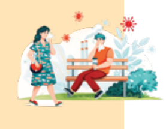
Tiếng ồn công nghiệp và các vấn đề thính giác
- Ví dụ: Công nhân làm việc trong các nhà máy dệt may hoặc cơ khí thường xuyên tiếp xúc với tiếng ồn lớn (trên 85dB), dẫn đến mất thính lực hoặc suy giảm khả năng nghe sau 5-10 năm làm việc.
Căng thẳng tâm lý và sức khỏe tinh thần
- Ví dụ: Nghiên cứu của Viện Sức khỏe nghề nghiệp và môi trường (Bộ Y tế) Việt Nam (2021) cho thấy khoảng 30% công nhân trong các khu công nghiệp phía Nam gặp phải các triệu chứng trầm cảm hoặc lo âu, nguyên nhân chủ yếu do áp lực công việc, tăng ca liên tục và không có đủ thời gian nghỉ ngơi.
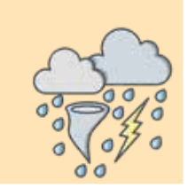
Biến đổi khí hậu và sức khỏe người lao động ngoài trời
- Ví dụ: Công nhân xây dựng tại các khu vực miền Nam phải làm việc dưới nhiệt độ cao trên 35°C vào mùa hè, gây nguy cơ sốc nhiệt, mất nước, và kiệt sức.
Chị Mai là công nhân trong một nhà máy điện tử tại khu công nghiệp (KCN) ở Hà Nội, nơi có mật độ công nhân cao và điều kiện sống khá khó khăn. Chị thuê nhà trọ ở chung với bạn trai. Môi trường sống của chị Mai trong khu vực này là sự kết hợp giữa môi trường công nghiệp và sống trong khu trọ không đảm bảo về không gian sống và điều kiện vệ sinh. Liệu tình trạng ô nhiễm tiếng ồn và không khí là những yếu tố có thể ảnh hưởng đến sức khỏe của chị Mai và bạn trai chị không? Chị Mai và bạn trai nên làm gì để cải thiện môi trường sống tốt hơn?
- Môi trường công nghiệp có thể gây ra các bệnh lý nghề nghiệp như bệnh hô hấp do tiếp xúc với bụi bẩn, hóa chất, hoặc ô nhiễm không khí.
- Ngoài ra, sống trong nhà trọ có thể dẫn đến thiếu ánh sáng tự nhiên, không khí kém và dễ bị stress. Theo nghiên cứu của Tổ chức Y tế Thế giới (WHO), ô nhiễm không khí có thể gây ra các bệnh tim mạch và hô hấp (WHO, 2018).
- Cải thiện chất lượng nhà trọ: Chị Mai có thể tìm kiếm các nhà trọ có môi trường sống tốt hơn, đảm bảo vệ sinh, thông thoáng và không bị ẩm thấp. Sử dụng các thiết bị lọc không khí và cây xanh trong phòng để cải thiện chất lượng không khí.
- Người lao động trong các khu công nghiệp nên kiểm tra chất lượng không khí từ các nguồn online (đơn giản nhất là trong Dự báo thời tiết của Zalo có thông báo hàng ngày). Nếu mức độ ô nhiễm không khí cao, người lao động nên hạn chế các hoạt động ngoài trời hoặc đeo khẩu trang khi ra ngoài.
- Chế độ ăn uống và tập luyện: Đảm bảo chế độ ăn uống lành mạnh, bổ sung đủ vitamin và khoáng chất, đồng thời duy trì thói quen tập thể dục để tăng cường sức đề kháng.
- Bảo vệ sức khỏe tại nơi làm việc: Sử dụng đầy đủ các thiết bị bảo vệ cá nhân (như khẩu trang chống bụi, găng tay, kính bảo vệ) khi làm việc trong môi trường có thể có bụi và hóa chất.
Tôi mới chuyển đến thành phố mới sinh sống. Làm thế nào để tôi có thể tìm được nhà trọ phù hợp?
Bạn có thể tìm nhà trọ phù hợp bằng những cách như:
- Tìm trên Internet hoặc ứng dụng tìm nhà trọ.
- Nhờ sự giới thiệu từ bạn bè, đồng nghiệp hoặc người quen.
- Tham khảo các trang web hoặc nhóm cộng đồng trên mạng xã hội chuyên về cho thuê phòng trọ.
- Bạn nên tham khảo cuốn sách về Nhà ở an toàn của Tổ chức Di cư quốc tế sẽ có nội dung cụ thể hơn.
Chị Ngọc (29 tuổi) và gia đình sống tại một khu công nghiệp ở Bắc Ninh, nơi có môi trường công nghiệp và ô nhiễm tiếng ồn. Chị Ngọc thường xuyên mất ngủ. Liệu sức khoẻ của chị Ngọc và gia đình có bị ảnh hưởng bởi tiếng ồn từ khu công nghiệp không?
- Môi trường công nghiệp có thể tác động tiêu cực đến sức khỏe trẻ em, bao gồm nguy cơ mắc các bệnh hô hấp và các vấn đề về tăng trưởng. Việc sống gần khu công nghiệp có thể làm tăng nguy cơ trẻ em bị nhiễm độc từ bụi bẩn, hóa chất và ô nhiễm tiếng ồn).
- Cải thiện không gian sống: Chị Ngọc nên chọn nơi ở có không khí trong lành, ít ô nhiễm hơn và gần các không gian xanh như công viên hoặc cây cối. Nếu có thể, nên chuyển đến nơi có chất lượng không khí tốt hơn hoặc tạo không gian xanh trong nhà.
- Duy trì sức khỏe gia đình: Tăng cường việc chăm sóc sức khỏe cho trẻ em, đặc biệt là phòng ngừa các bệnh về hô hấp, cung cấp đầy đủ dinh dưỡng và cho con chơi đùa ở nơi thoáng đãng.
- Giảm tiếp xúc với ô nhiễm: Chị có thể đưa mẹ về quê sinh sống để hạn chế tác động của môi trường công nghiệp đến sức khỏe của bà và các cháu.
Anh Đạt (25 tuổi) sống trong một khu trọ tại thành phố Đồng Nai cùng với các bạn đồng nghiệp. Môi trường sống của anh có thể gặp phải các vấn đề như thiếu không gian sống riêng tư, chất lượng nhà trọ không đảm bảo về vệ sinh, và điều kiện sống bị ảnh hưởng bởi sự đông đúc, tắc nghẽn của khu vực công nghiệp. Anh Đạt nên làm gì?
- Sống trong khu trọ có thể gây ảnh hưởng đến sức khỏe tâm lý và thể chất của anh Đạt, đặc biệt là trong các trường hợp có điều kiện sống không thuận lợi như thiếu vệ sinh, không khí kém, và không gian sống chật hẹp. Các nghiên cứu cho thấy môi trường sống kém chất lượng có thể gia tăng nguy cơ mắc các bệnh nhiễm trùng đường hô hấp, bệnh về da và các vấn đề về tâm lý như căng thẳng và lo âu.
- Cải thiện không gian sống: Anh Đạt có thể tìm kiếm nhà trọ có không gian rộng rãi hơn và có các tiện nghi cơ bản như khu vệ sinh sạch sẽ, ánh sáng tự nhiên và không khí trong lành.
- Đảm bảo vệ sinh cá nhân và vệ sinh chung: Dọn dẹp phòng trọ thường xuyên, sử dụng các thiết bị lọc không khí, giữ cho môi trường xung quanh sạch sẽ để giảm nguy cơ mắc các bệnh về da và hô hấp.
- Thực hiện các biện pháp giảm căng thẳng: Anh Đạt có thể tham gia các hoạt động thể thao hoặc giải trí sau giờ làm việc để giảm căng thẳng, đồng thời duy trì một chế độ ăn uống lành mạnh, đủ chất dinh dưỡng.
Nước sinh hoạt ở nhà trọ của tôi có vẻ không được tốt, nước có mùi và cặn bẩn. Điều này có ảnh hưởng đến sức khỏe của gia đình tôi tôi không? Tôi nên làm gì?
- Nước sinh hoạt không sạch sẽ, có mùi hoặc cặn bẩn có thể gây ra các bệnh về đường tiêu hóa như tiêu chảy, viêm ruột, và ảnh hưởng tới sức khỏe tổng quát.
- Bạn nên:
- Sử dụng máy lọc nước hoặc nước uống đóng chai để đảm bảo nguồn nước sạch cho ăn uống.
- Thông báo tình trạng nước bẩn với chủ nhà trọ để họ kiểm tra và khắc phục.
- Nếu không cải thiện, bạn nên cân nhắc chuyển sang nơi ở khác có nguồn nước đảm bảo hơn.
Gần đây có một quán karaoke mới mở ngay cạnh nơi tôi ở. Tôi không thể ngủ được vì những tiếng ồn quá lớn từ quán karaoke. Điều này có hại cho sức khỏe của tôi không? Tôi nên làm gì?
- Tiếng ồn quá mức, đặc biệt vào ban đêm, có thể gây ảnh hưởng nghiêm trọng đến giấc ngủ và sức khỏe tinh thần, làm gia tăng stress và giảm chất lượng cuộc sống.
- Bạn có thể:
- Trao đổi với chủ nhà để họ làm việc với quán karaoke nhằm giảm tiếng ồn hoặc đề nghị ít nhất không làm ồn sau 22h.
- Nếu không có cải thiện, bạn có thể phản ánh lên chính quyền địa phương hoặc cơ quan chức năng để kiểm tra và xử lý tiếng ồn.
- Trong khi chờ giải quyết, sử dụng nút tai chống ồn hoặc các phương pháp giảm tiếng ồn khác để có thể ngủ tốt hơn.
Khu trọ tôi ở rất chật chội, gần đây có nhiều người hàng xóm bị cúm A. Tôi nên làm gì để bảo vệ sức khỏe?
Khi có dịch bệnh như cúm A, bạn cần thực hiện các biện pháp phòng tránh sau:
- Giữ vệ sinh cá nhân, rửa tay thường xuyên bằng xà phòng.
- Đeo khẩu trang khi ra ngoài hoặc tiếp xúc với người khác.
- Hạn chế tụ tập đông người và giữ khoảng cách với những người có triệu chứng bệnh.
- Cải thiện sức khỏe bằng cách ăn uống đủ chất, ngủ đủ giấc, và tập thể dục nhẹ nhàng.
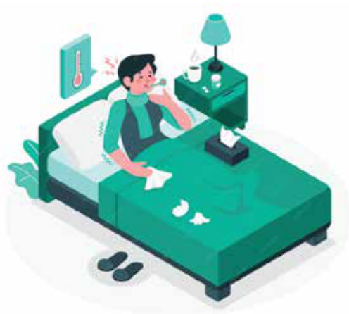
Khu trọ tôi ở bị ngập úng do mưa lớn và luôn bị ảnh hưởng của mưa, bão khiến cuộc sống sinh hoạt thường ngày gặp rất nhiều khó khăn. Tôi phải làm gì để bảo vệ sức khỏe và đảm bảo an toàn?
- Ngập úng và mưa bão có thể gây ra các bệnh liên quan đến môi trường ẩm ướt, như bệnh da liễu hoặc bệnh truyền nhiễm.
- Việc ứ đọng nước thường xuyên tạo điều kiện cho muỗi sinh sôi và làm tăng nguy cơ mắc các bệnh nguy hiểm như sốt xuất huyết.
- Bạn nên:
- Sử dụng các biện pháp chống thấm nếu có thể.
- Giữ vệ sinh khu vực sinh sống và đảm bảo không để nước ngập lâu trong phòng.
- Chuẩn bị đồ bảo hộ (ủng, áo mưa) và thuốc men dự phòng cho những ngày mưa bão kéo dài.
- Nếu tình trạng quá nghiêm trọng, bạn nên cân nhắc chuyển đến khu vực ít bị ngập lụt do mưa bão.
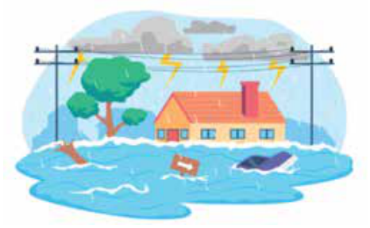
Khu trọ tôi thuê ở xa bệnh viện, hoàn cảnh gia đình tôi rất khó khăn. Nếu bị bệnh, tôi phải làm thế nào?
- Khi sống ở xa bệnh viện, bạn có thể gặp khó khăn khi cần chăm sóc y tế khẩn cấp.
- Để chủ động bảo vệ sức khỏe bạn nên:
- Tìm hiểu các phòng khám gần nhà có thể cung cấp dịch vụ sơ cứu hoặc điều trị cơ bản.
- Sử dụng dịch vụ bảo hiểm y tế để được hỗ trợ chi phí điều trị khi cần thiết.
- Dự trữ thuốc men cơ bản tại nhà để điều trị các bệnh thông thường.
- Nếu bạn gặp vấn đề sức khỏe nghiêm trọng, bạn nên liên hệ với đồng nghiệp, người thân, bạn bè, chính quyền địa phương hoặc các tổ chức từ thiện để được hỗ trợ.